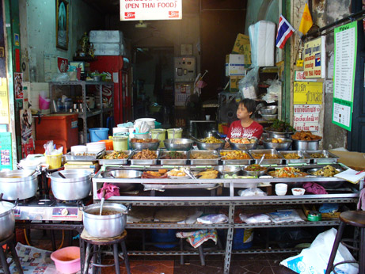
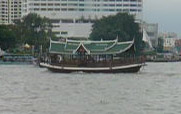
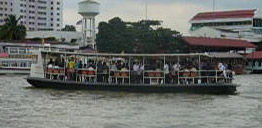
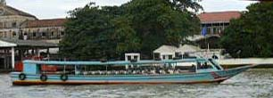
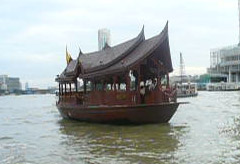
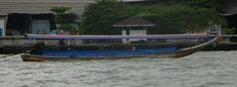
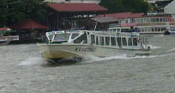
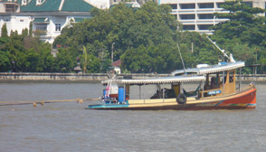
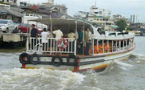

December 10, 2005
Hi Folks,
Really enjoying the weather at this time of year in Bangkok. Very little rain, with temperatures ranging from mid-eighties in the day to low seventies at night.
Picked up the Myanmar visa without incident, and then walked around Bangkok in areas new to me. After much searching the web and local Travel agents, found very little price difference for round trip flight to Yangon, Myanmar. Booked for 28 days starting Tuesday.
Not much else to write about, so here are a few photos.
Buddha and guard at Wat Pho.
|  |
My favorite location for lunch. They place about thirty different dishes out each day, each labeled. Select two, with rice, add a bottled soft drink, and the bill will be $.75 to $1. A posted menu even gives prices! The steel racks holding the food is just outside the front door, taking up sidewalk space. four small tables with four chairs each take up most of the remaining sidewalk space. Passersby must walk between the tables and the food rack. Awnings shield the customers from the noonday sun. |
 |
 |
 |
 |
Chao Phraya
River Transportation |
 |
|  |
 |
 |
River transportation on the Chao Phraya is not easy to master, but well worth the effort. Some boats just go across and back, some are long-haul express, some have limited hours, and some are only for hire. Of course you must know from which pier to catch the boat, and where it will deliver you. I only use the River Taxi, both local and express versions. Colored flags are on the roof, designating which stops it makes. My map has all the stops shown.
Enjoy the season!
Bill
=================================
"Travel is Fatal to Bigotry, Prejudice, and Narrow-minded ness" ....
attributed to Mark Twain